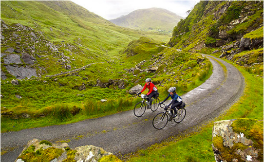
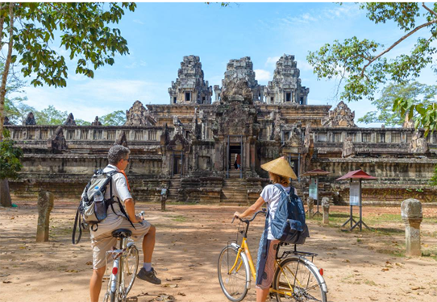
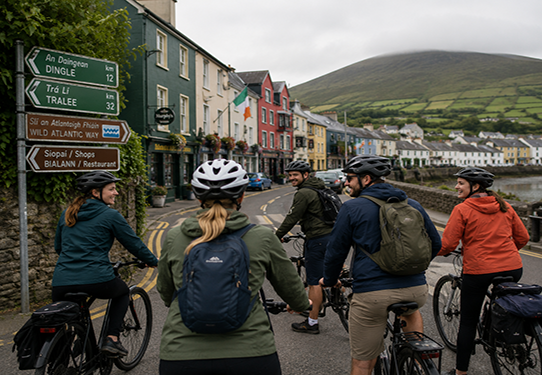

Hello and welcome to Bicycle Touring Ireland, the world’s most popular how-to bicycle touring website and information source! You’ve come to the right place if you want to learn how to conduct your own guided, self-guided or self supported bicycle touring adventures. Get started right away and learn how here!

“Bicycle touring” is the act of riding a bicycle for days, weeks, or months on end as you travel long distances across cities, states and countries. Thousands of people of all ages. Incomes and demographics are traveling… and you can be one of them.
In fact, my goal here at Bicycle Touring is to not only inspire you with my own adventures, but to teach YOU how to travel by bike, remain comfortable while out on the road and have fun along the way. In other words, Bicycle Touring is here to give you:

Ireland is one of the planet’s most sought-after bike touring destinations and a place that many people, the world over, dream of visiting, if only once in their lifetime. The steep seaside cliffs, the lush green mountains, colorful towns attract millions of tourists from all around the world.
Common Concerns: